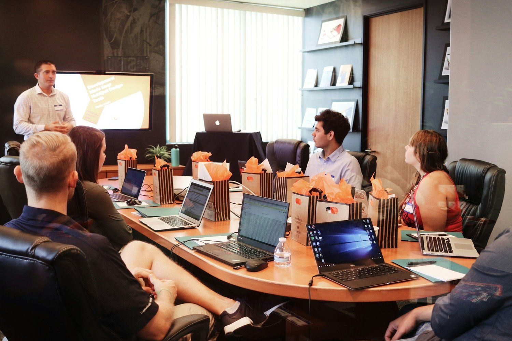

Why not just use AI?
AI is useful. We use it every day. But it cannot sit in your boardroom, read the room or tell you which of its ten good ideas will work in your market.
AI can sift data quickly, pull together a first draft and help a team get moving. We use it ourselves, and we have built AI-assisted tools for clients and for our own sites.
But shaping a sales strategy, building a commercial model or fixing a go-to-market plan needs judgement. The kind that only comes from having done it. AI can describe a market. It cannot tell you what works in a negotiation with a customer who has competing priorities and a tight budget.
The best results come when AI supports experience, not when it replaces it. Our job is to bring the experience, apply it to your business and turn the noise into a plan you can deliver.

- Summarising data and research quickly
- Producing first drafts and options
- Spotting patterns in large datasets
- Speeding up repetitive work
- Choosing the right option for your market
- Challenging assumptions inside the business
- Coaching teams and steadying nerves in a tough negotiation
- Turning a technical offer into something a CFO will back
How AI is changing B2B energy sales
Martyn’s longer view on what AI means for salespeople, buyers and sales leaders in energy.

Got a commercial problem that needs a clear answer?
Start with a conversation. No pitch, no obligation. Just an honest view on where the growth is and what is getting in the way.